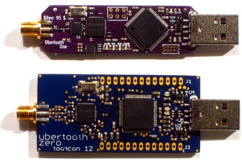

an open source 2.4 GHz wireless development platform suitable for Bluetooth experimentation
Welcome to the project site and documentation for Project Ubertooth. Here you can learn how to build, use, and develop for the Ubertooth hardware platforms:
Ubertooth One is the recommended platform.
Demonstration software is available that implements passive Basic Rate Bluetooth monitoring integrated into Kismet. With additional software development, many other functions will become possible, including:
The Ubertooth hardware architecture is not compatible with Bluetooth Enhanced Data Rate (EDR) modulations. However, EDR packets begin with a Basic Rate (1 Mbps GFSK) header, so Ubertooth could be used for identification and partial monitoring of EDR transmissions.